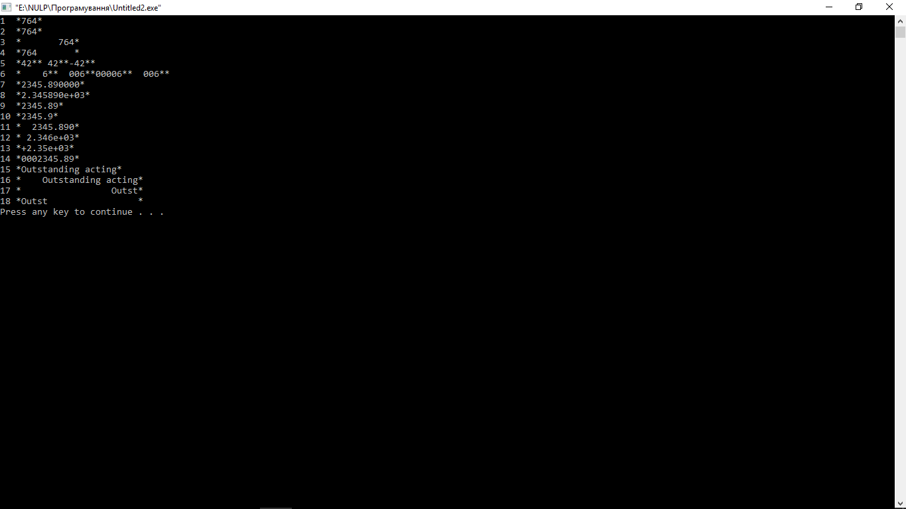

- Команда Open (Ctrl+Shift+O ) – відповідає за відкриття файлу;
- Команда Close Solution – відповідає за закриття файлу.
| Кобінація клавіш | Команда |
| Ctrl+X | Вирізати |
| Ctrl+C | Копіювати |
| Ctrl+V | Вставити |
| Del | Видалити символ |
| Ctrl+Z | Відкат назад |
| Ctrl+Y | Відкат вперед |
| Ctrl+F | Пошук |
| Ctrl+H | Заміна |
Текст програми:
#include
#define PAGES 764
#define RENT 2345.89
#define STRING "Outstanding acting"
int main(int argc, char* argv[])
{
// integer
printf("1 *%d*\n", PAGES);
printf("2 *%2d*\n", PAGES);
printf("3 *%10d*\n", PAGES);
printf("4 *%-10d*\n", PAGES);
printf("5 *%d**% d**% d**\n", 42, 42, -42);
printf("6 *%5d**%5.3d**%05d**%05.3d**\n", 6, 6, 6, 6);
// float
printf("7 *%f*\n", RENT);
printf("8 *%e*\n", RENT);
printf("9 *%4.2f*\n", RENT);
printf("10 *%3.1f*\n", RENT);
printf("11 *%10.3f*\n", RENT);
printf("12 *%10.3e*\n", RENT);
printf("13 *%+4.2e*\n", RENT);
printf("14 *%010.2f*\n", RENT);
// string
printf("15 *%2s*\n", STRING);
printf("16 *%22s*\n", STRING);
printf("17 *%22.5s*\n", STRING);
printf("18 *%-22.5s*\n", STRING);
return 0;
}

Висновок:
на лабораторній роботі ми познайомилися iз засобами iнтегрованого середовища Visual C++ 2015 для роботи з проектом, з командами текстового редактора iнтегрованого середовища Visual C++ 2015, iз виразами мови С, операцiєю присвоювання та стандартною функцiєю виводу мови C.